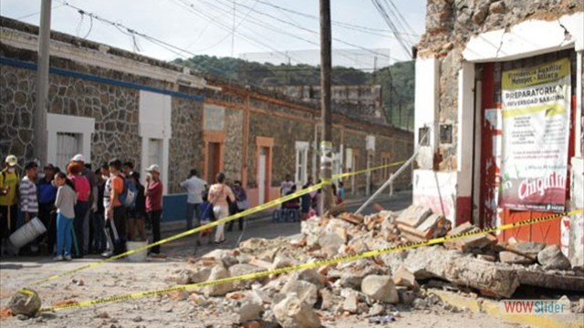

Camina o maneja bicicleta siempre que sea posible
Una de las mejores cosas que puedes hacer para ayudar a detener la contaminación es dejar de utilizar tu auto para realizar viajes cortos. Si el clima es agradable y no tienes que desplazarte una distancia muy larga, considera la posibilidad de caminar o ir en bicicleta.
Utiliza el transporte público
Viajar en autobús, tren o subterráneo es otra forma excelente de evitar utilizar tu vehículo particular y reducir las emisiones de carbono. Si en el lugar donde vives tienes acceso a un buen transporte público, aprovéchalo.
Combina tus viajes
Hacer muchos viajes pequeños durante el transcurso de unos pocos días contribuye a generar más contaminación en el ambiente cada vez que te subes a tu auto. En lugar de hacer varios recados a lo largo de unos cuantos días, trata de combinarlos y de hacerlos en un solo viaje.
Comparte el auto para ir a la escuela o el trabajo
Los viajes largos a la escuela o el trabajo son solo una parte de la vida para muchas personas. Si caminar y usar el transporte público no son buenas alternativas para ti, considera la posibilidad de compartir el auto con otra persona para desplazarte a la escuela o el trabajo
Conduce con precaución
Los hábitos de conducción inseguros también contribuyen a la contaminación, de modo que convertirte en un conductor más prudente podrá ayudar a reducir la contaminación del aire.
Considera la posibilidad de comprar un auto híbrido o eléctrico la próxima vez que quieras adquirir un vehículo.
Los autos eléctricos funcionan únicamente con electricidad, de modo que no emiten sustancias nocivas al ambiente. Los autos híbridos utilizan una combinación de electricidad y combustible para funcionar. Si bien los autos eléctricos son menos contaminantes, ambas alternativas ayudarán a detener la contaminación.

- 


 1
1 2
2 3
3 4
4 7
7 8
8 9
9 10
10 1
1 2
2 3
3